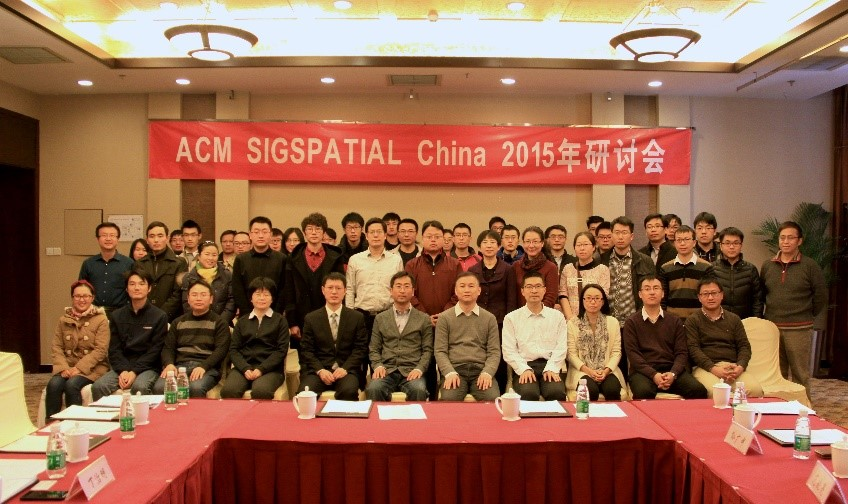

Contents
History
ACM SIGSPATIAL China 2015年研讨会
(暨“时空大数据管理”学术研讨会)
在北京工业大学成功举办
2015年12月7日，北京工业大学计算机学院举办了为期一天的ACM SIGSPATIAL China 2015年学术会议(暨“时空大数据管理”学术研讨会)，来自于国内及国外的近六十名学者济济一堂，会议获得圆满成功

随着信息技术的发展，特别是物联网技术、移动计算技术、大数据技术、智慧城市技术、智能交通及导航技术的发展，空间数据管理、地理信息系统、时空数据管理已经成为了一个核心的技术领域，得到了人们的广泛关注。近年来，空间数据管理相关产业蓬勃发展，在各个重大科技计划、关键领域、行业应用中占据了举足轻重的地位。
为了促进空间数据管理技术在中国的科学研究与产业发展，ACM SIGSPATIAL China在过去的几年里进行了不懈的努力。ACM SIGSPATIAL China 2015年研讨会的目的，就是总结过去一年的主要工作、总结和交流相关的研究成果，并科学谋划和明确未来的工作目标。
八名来自于浙江大学、西北工业大学、深圳大学、电子科大、兰州大学等知名高校的大数据专家分别就智慧城市、移动群体感知、位置推荐及定位相关研究、智能手机应用挖掘、多源位置数据研究、交通大数据分析与可视化等领域展示了各自的最新研究成果。北京工业大学计算机学院丁治明教授对北京工业大学计算机学院的科研总体情况、智慧城市感知大数据研究等进行了介绍。
在会议期间，ACM SIGSPATIAL China专委会还讨论了时空大数据领域的现状与发展趋势，关键技术与应用中瓶颈等热点问题，围绕相关学科前沿、支撑产业、战略与发展路线图进行讨论与规划。
会议资料下载：https://pan.baidu.com/s/1i3PSYKt
(撰稿人 : admin)
12th Sep, 2015